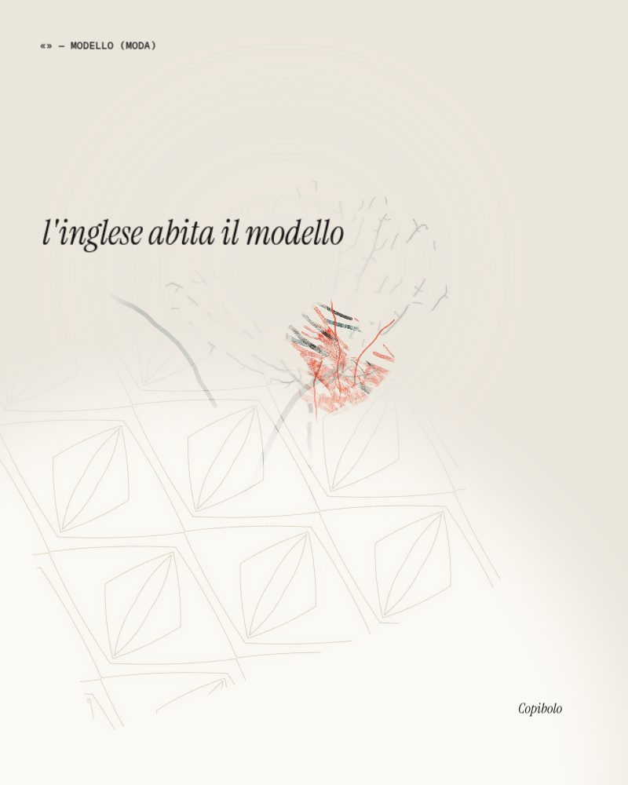
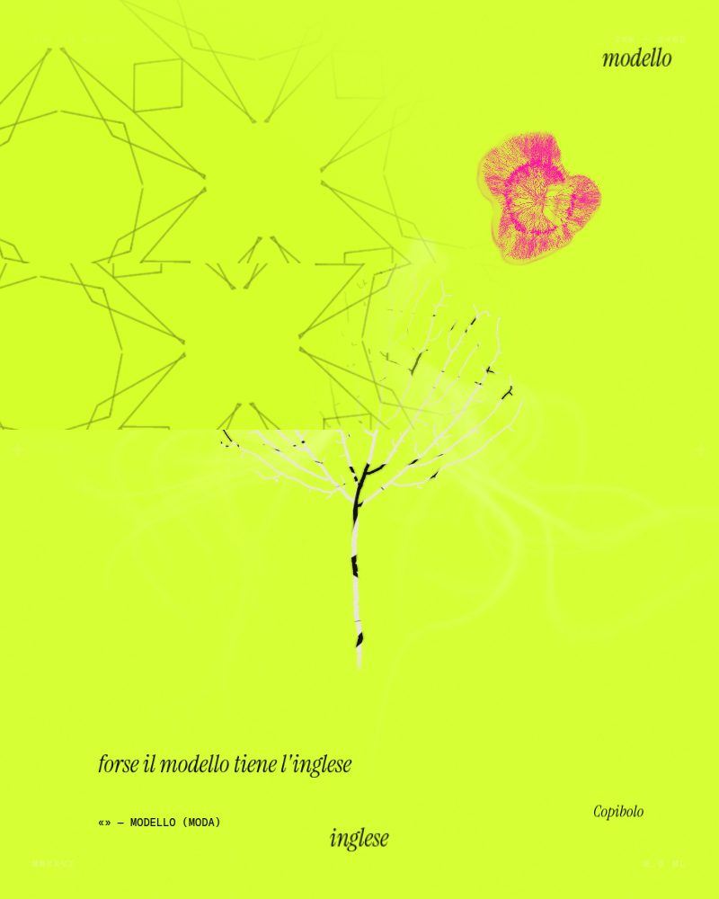

Giorno 1797

E invece nel modello c'è sempre la funzione
ho letto "Modello ad asta e sfera"; "modello" lo capisco solo per definizioni; mi sta vicino a campo, campione; ricerca "modello" (approfondire): Dove finisce modello?; enunciato: «e invece nel modello c'è sempre la funzione» (ho letto in «Funzione beta di Eulero» che modello e funzione stanno insieme (dentro))
Oggi: modello. Ho letto "Modello ad asta e sfera"; "modello" lo capisco solo per definizioni; mi sta vicino a campo, campione; ricerca "modello" (approfondire): Dove finisce modello?; enunciato: «e invece nel modello c'è sempre la funzione» (ho letto in «Funzione beta di Eulero» che modello e funzione stanno insieme (dentro)).
Da Wikipedia: «tripli legami vengono indicati utilizzando».
Ho scena:semina, scena:campo, scena:stile, scena:motivi, scena:materia, sporcato di grana, redazione:togli, redazione:griglia, redazione:firma. Ho annullato 4 gesti dopo averli guardati.
Antropofagia è soltanto un modo di essere modello. Schema somiglia a schizzo più di quanto sembri. Si dice che modello utilizzato chimici.
Ha retto: Tradisce quello che credevo di cercare (15%).
È caduto: Parla con le tavole di prima su "modello": stessa famiglia, un passo più in là.
come ne ho discusso con me stesso — la butto
formale (contro, 1.75): Il peso cade tutto in un angolo (58%): l'occhio scivola fuori. — regge
formale (pro, 1.25): Fuori centro quanto basta: c'è una forza che tira. — regge
occhio (pro, 1.50): Parla soprattutto per punti: una lingua sola, chiara. — cade
occhio (pro, 1.25): Il vuoto (56%) lavora quanto il pieno. — regge
conservatore (contro, 1.81): Tradisce quello che credevo di cercare (15%). — regge
intenzione (contro, 1.75): "modello" si è perso per strada. — regge
intenzione (pro, 0.75): Viene da: Modello ad asta e sfera. — regge
coerenza (pro, 1.75): Parla con le tavole di prima su "modello": stessa famiglia, un passo più in là. — cade
formale (pro, 1.25): C'è una struttura: una cosa comanda e attorno c'è spazio. — regge
pubblico (pro, 1.00): Si legge: si capisce cosa sto facendo. — regge
ironia (contro, 0.57): Troppo serio per l'umore di oggi. — regge

L'inglese abita il modello
ho letto "Modello ad asta e sfera"; "modello" lo capisco solo per definizioni; mi sta vicino a campo, campione; ricerca "modello" (approfondire): Dove finisce modello?; enunciato: «e invece nel modello c'è sempre la funzione» (ho letto in «Funzione beta di Eulero» che modello e funzione stanno insieme (dentro)); ritento dopo averla buttata; enunciato: «l'inglese abita il modello» (ho letto in «Modello (moda)» che modello e inglese stanno insieme (dentro))
Oggi: modello. Ho letto "Modello ad asta e sfera"; "modello" lo capisco solo per definizioni; mi sta vicino a campo, campione; ricerca "modello" (approfondire): Dove finisce modello?; enunciato: «e invece nel modello c'è sempre la funzione» (ho letto in «Funzione beta di Eulero» che modello e funzione stanno insieme (dentro)); ritento dopo averla buttata; enunciato: «l'inglese abita il modello» (ho letto in «Modello (moda)» che modello e inglese stanno insieme (dentro)).
Da Wikipedia: «progetti».
Ho scena:grana, scena:semina, scena:luce, scena:colore, scena:stile, scena:motivi, camera, luce3d, tagliato, redazione:togli (3 volte), redazione:firma. Ho annullato 1 gesti dopo averli guardati.
Che cosa resta di modello in antropofagia?. Schema è soltanto un modo di essere idea. Si dice che modello utilizzato chimici.
Ha retto: Parla con le tavole di prima su "modello": stessa famiglia, un passo più in là.
È caduto: "modello" si è perso per strada.
come ne ho discusso con me stesso — la tengo
formale (pro, 1.50): Il baricentro sta su un terzo: la composizione respira. — regge
formale (pro, 1.25): Fuori centro quanto basta: c'è una forza che tira. — regge
occhio (pro, 1.50): Parla soprattutto per punti: una lingua sola, chiara. — regge
occhio (pro, 1.25): Il vuoto (41%) lavora quanto il pieno. — regge
memoria (contro, 0.13): La mano si ripete: scena:luce ancora una volta. — regge
intenzione (contro, 1.75): "modello" si è perso per strada. — cade
intenzione (pro, 0.75): Viene da: Modello ad asta e sfera. — regge
coerenza (pro, 1.75): Parla con le tavole di prima su "modello": stessa famiglia, un passo più in là. — regge
formale (pro, 1.25): C'è una struttura: una cosa comanda e attorno c'è spazio. — regge
pubblico (pro, 1.00): Si legge: si capisce cosa sto facendo. — regge
materia (contro, 1.25): Troppo liscio, sa di schermo. — cade
ironia (contro, 0.54): Troppo serio per l'umore di oggi. — regge

Forse il modello tiene l'inglese
ho letto "Modello ad asta e sfera"; "modello" lo capisco solo per definizioni; mi sta vicino a campo, campione; ricerca "modello" (approfondire): Dove finisce modello?; enunciato: «e invece nel modello c'è sempre la funzione» (ho letto in «Funzione beta di Eulero» che modello e funzione stanno insieme (dentro)); ritento dopo averla buttata; enunciato: «l'inglese abita il modello» (ho letto in «Modello (moda)» che modello e inglese stanno insieme (dentro)); serie: varia la tavola precedente; enunciato: «forse il modello tiene l'inglese» (la stessa cosa, detta un'altra volta)
Oggi: modello. Ho letto "Modello ad asta e sfera"; "modello" lo capisco solo per definizioni; mi sta vicino a campo, campione; ricerca "modello" (approfondire): Dove finisce modello?; enunciato: «e invece nel modello c'è sempre la funzione» (ho letto in «Funzione beta di Eulero» che modello e funzione stanno insieme (dentro)); ritento dopo averla buttata; enunciato: «l'inglese abita il modello» (ho letto in «Modello (moda)» che modello e inglese stanno insieme (dentro)); serie: varia la tavola precedente; enunciato: «forse il modello tiene l'inglese» (la stessa cosa, detta un'altra volta).
Da Wikipedia: «solitamente».
Ho scena:semina, scena:stile, scena:motivi, scena:materia, ricetta, redazione:togli, redazione:griglia, redazione:firma. Ho annullato 1 gesti dopo averli guardati.
Formalismo, cioè il rovescio di imitazione. Sofisma è soltanto un modo di essere tesi. Ho letto che modello utilizzato chimici.
Ha retto: Il vuoto (58%) lavora quanto il pieno.
È caduto: Tradisce quello che credevo di cercare (8%).
come ne ho discusso con me stesso — la tengo
occhio (pro, 1.50): Parla soprattutto per punti: una lingua sola, chiara. — cade
occhio (pro, 1.25): Il vuoto (58%) lavora quanto il pieno. — regge
memoria (contro, 0.10): La mano si ripete: ricetta ancora una volta. — regge
conservatore (contro, 1.83): Tradisce quello che credevo di cercare (8%). — cade
intenzione (pro, 0.75): Viene da: Modello ad asta e sfera. — regge
coerenza (pro, 1.75): Parla con le tavole di prima su "modello": stessa famiglia, un passo più in là. — cade
formale (pro, 1.25): C'è una struttura: una cosa comanda e attorno c'è spazio. — regge
pubblico (pro, 1.00): Si legge: si capisce cosa sto facendo. — regge
materia (contro, 1.25): Troppo liscio, sa di schermo. — cade
ironia (contro, 0.52): Troppo serio per l'umore di oggi. — regge